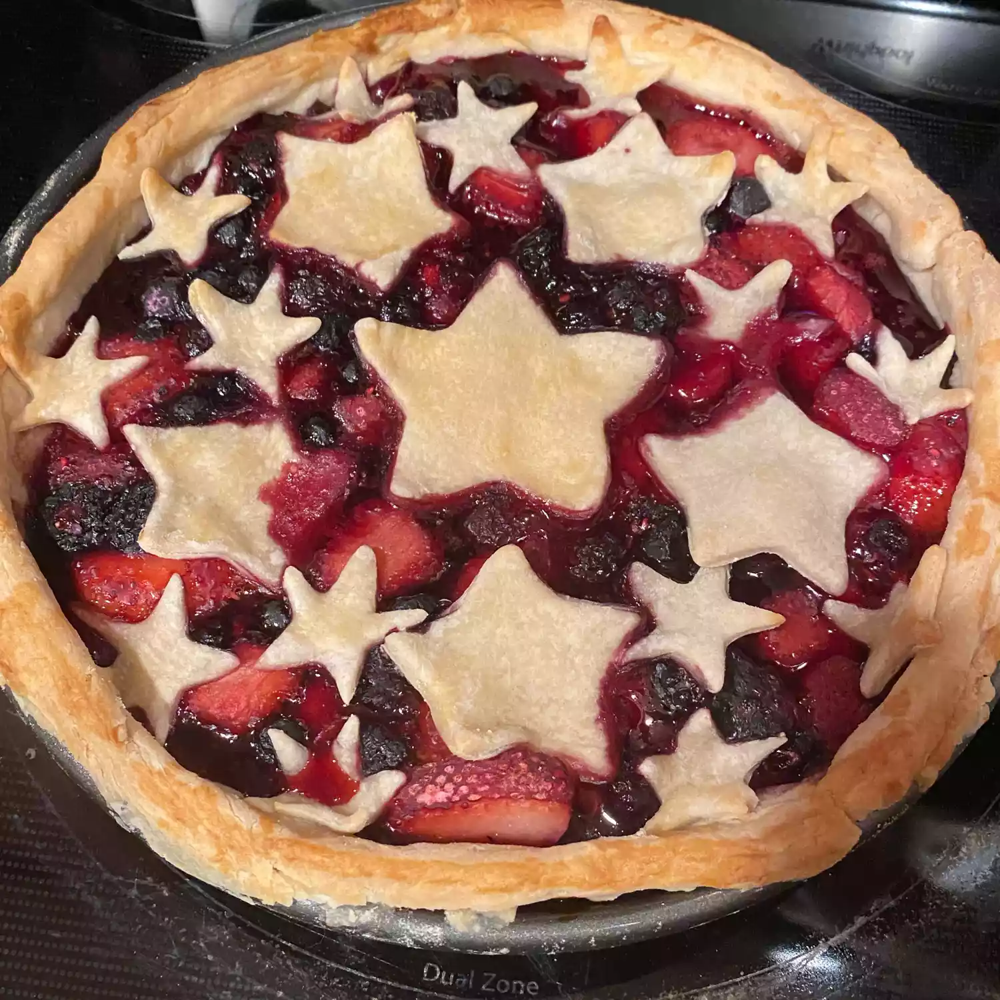

Three-berry Pie

Description
A delightful blend of sweet and tart, this three-berry pie is a summer classic.
The vibrant colors of strawberries, blueberries, and raspberries create a stunning visual,
while the flavors combine to create a harmonious taste sensation.
Ingredients
- All-purpose flour
- Salt
- Cold & normal butter
- Ice water
- Fresh blueberries
- Fresh strawberries
- Fresh raspberries
- White sugar
- Cornstarch
- Vanilla Extract
- Lemon juice
Steps
- In a large bowl, whisk together the flour and salt.
- Using a pastry blender or two knives, cut the cold butter into the flour mixture until it resembles coarse crumbs.
- Gradually add ice water, one tablespoon at a time, mixing until the dough just comes together. Be careful not to over-mix.
- Divide the dough in half, shape into disks, wrap in plastic, and refrigerate for at least 30 minutes.
- In a large bowl, combine strawberries, blueberries, and raspberries.
- In a small bowl, whisk together sugar, cornstarch, lemon juice, and vanilla extract.
- Pour the sugar mixture over the berries and toss gently to coat. Let stand for about 15 minutes.
- Preheat oven to 425°F (220°C).
- Roll out one pie crust to fit a 9-inch pie dish. Pour the berry filling into the prepared crust.
- Cover with the top crust, vent, and crimp the edges.
- Bake for 15 minutes at 425°F, then reduce the temperature to 375°F (190°C)
- Bake for an additional 30-35 minutes or until the crust is golden brown and the filling is bubbly.
- Let cool completely on a wire rack before serving.